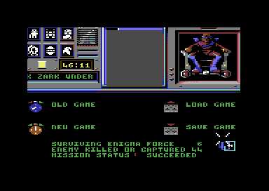
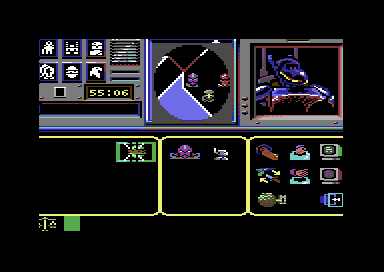

<meta charset="utf-8">
<meta name="viewport" content="width=device-width, initial-scale=1">
<title>Shadowfire</title>
<link rel="preconnect" href="https://fonts.googleapis.com">
<link rel="stylesheet" href="https://fonts.googleapis.com/css2?family=Lato:wght@400;700;900&family=IBM+Plex+Mono:wght@400;500&display=swap">
<style>
:root{
  --bg:#23262d; --paper:#e9e7e1; --surface:#ffffff; --surface-2:#f1efea; --line:#d5d3cc; --line-soft:#e0ded8;
  --ink:#2f3136; --ink-soft:#55585f; --ink-mute:#80838a;
  --link:#1f5fa8; --link-hover:#154480; --accent:#1f5fa8;
  --amber:#c25a00; --cyan:#1f5fa8; --coral:#d04a3a; --green:#2a8a4a; --violet:#4a5bd6; --hl:#fff0c2;
  --chip:#2f3136; --chip-ink:#ffffff;
  --c64blue:#40318d; --c64grey:#686868;
  --fd:'Lato',system-ui,sans-serif; --fb:'Lato',system-ui,sans-serif; --fm:'IBM Plex Mono',ui-monospace,Menlo,monospace;
  --col:1080px; --gx:68px; --fs:17px; --lh:1.6; --hw:900; --h1:46px; --h2:26px; --sy:48px; --pp:26px; --r:10px;
  --plate-shadow:0 1px 2px rgba(0,0,0,.05),0 4px 14px rgba(0,0,0,.05);
}
*{box-sizing:border-box}
html{background:var(--bg);min-height:100%}
body{background:var(--paper);color:var(--ink);font-family:var(--fb);font-size:var(--fs);line-height:var(--lh);max-width:var(--col);margin:0 auto;min-height:100vh;padding:0 0 4rem}
h1,h2,h3{font-weight:var(--hw);letter-spacing:-.01em;text-wrap:balance;color:var(--ink);margin:0}
.wrap{padding:0 var(--gx)}
.hero{padding:48px var(--gx) 8px;text-align:left}
.eyebrow{font-family:var(--fm);font-size:12px;letter-spacing:.08em;text-transform:uppercase;color:var(--ink-mute);margin:0 0 10px}
.hero h1{font-size:var(--h1);line-height:1.15;letter-spacing:-.02em;margin:0 0 14px}
.hero .sub{margin:0 0 .6em;color:var(--ink-soft)}
section{padding:var(--sy) 0 24px}
section:last-of-type{border-bottom:none}
.fig{font-family:var(--fm);font-size:12px;letter-spacing:.08em;text-transform:uppercase;color:var(--ink-mute);margin:0 0 10px}
h2.t{font-size:var(--h2);margin-bottom:12px}
.lede{color:var(--ink-soft);margin:0 0 30px}
.plate{background:var(--surface);border:1px solid var(--line);border-radius:var(--r);padding:var(--pp);box-shadow:var(--plate-shadow)}
.cap{font-size:14px;color:var(--ink-mute);margin-top:14px;line-height:1.55}
.cap b{color:var(--ink);font-weight:700}
code{font-family:var(--fm);font-size:.82em;background:var(--chip);color:var(--chip-ink);border-radius:4px;padding:2px 6px;white-space:nowrap}

.sf-cv{display:block;width:100%;height:auto;image-rendering:pixelated;background:#000;border-radius:4px}
.sf-stack{position:relative}
.sf-stack canvas+canvas{position:absolute;left:0;top:0;background:transparent;pointer-events:none}
.sf-bar{display:flex;flex-wrap:wrap;gap:8px;margin:0 0 14px}
.sf-btn{font:inherit;font-family:var(--fm);font-size:12.5px;background:var(--surface);border:1px solid var(--line);border-radius:6px;padding:5px 11px;color:var(--ink);cursor:pointer;line-height:1.3}
.sf-btn:hover{border-color:var(--ink-mute)}
.sf-btn[aria-pressed="true"]{background:var(--accent);border-color:var(--accent);color:#fff}
.sf-out{font-size:15px;color:var(--ink);margin:12px 0 0;min-height:3em;line-height:1.55}
.sf-out b{font-weight:700}
.sf-two{display:grid;grid-template-columns:minmax(0,1fr) minmax(0,1fr);gap:22px;align-items:start}
.sf-tbl{border-collapse:collapse;font-size:14px;width:100%;margin:4px 0 0}
.sf-tbl th,.sf-tbl td{text-align:left;vertical-align:top;padding:5px 8px;border-bottom:1px solid var(--line-soft)}
.sf-tbl th{font-weight:700;color:var(--ink-soft)}
.sf-tbl td.sf-n{font-family:var(--fm);font-size:13px;white-space:nowrap}
.sf-meter{display:inline-block;height:9px;border-radius:2px;background:var(--accent);vertical-align:1px;margin-right:8px}
.sf-steps{margin:0;padding-left:1.4em}
.sf-steps li{margin:0 0 .45em}
.sf-picks{display:flex;flex-wrap:wrap;gap:12px;align-items:flex-end}
.sf-picks figure{margin:0;text-align:center;font-size:13px;line-height:1.35}
.sf-picks .sf-n{font-family:var(--fm)}
.sf-grid{display:grid;grid-template-columns:repeat(auto-fill,minmax(52px,1fr));gap:6px}
.sf-grid button{background:#000;border:2px solid transparent;border-radius:5px;padding:4px;cursor:pointer;display:flex;align-items:center;justify-content:center;min-height:52px}
.sf-grid button[aria-pressed="true"]{border-color:var(--amber)}
.sf-grid canvas{image-rendering:pixelated;max-width:100%}
.sf-strip{display:grid;grid-template-columns:repeat(25,minmax(0,1fr));gap:3px;margin:0 0 6px}
.sf-strip button{font-family:var(--fm);font-size:10px;padding:5px 0;border:1px solid var(--line);border-radius:4px;cursor:pointer;color:#fff}
.sf-strip button[aria-pressed="true"]{outline:2px solid var(--ink);outline-offset:1px}
.sf-key{display:flex;flex-wrap:wrap;gap:6px 16px;font-size:13px;color:var(--ink-soft);margin:8px 0 0}
.sf-key i{display:inline-block;width:11px;height:11px;border-radius:2px;margin-right:6px;vertical-align:-1px}
.sf-code{font-family:var(--fm);font-size:12px;line-height:1.5;background:#1d1f24;color:#e9e7e1;padding:14px;border-radius:6px;overflow-x:auto;margin:0 0 14px;white-space:pre}
.sf-mono{font-family:var(--fm);font-size:13px}
.sf-ring{align-items:center;margin:14px 0 0;gap:6px}
.sf-ring small{opacity:.7;margin-left:4px}
.sf-ring>span{color:var(--ink-mute)}
@media (max-width:720px){.sf-two{grid-template-columns:1fr}.sf-strip{grid-template-columns:repeat(10,minmax(0,1fr))}}
</style>
<!-- tabs -->
<header class="hero">
  <p class="eyebrow">1985 · Beyond Software</p>
  <h1>Shadowfire</h1>
  <p class="sub">A way to win with five of the six: land in the fighter bay, take the armoury's light guns, fight through Zoff's security, walk Kryxix out of the interrogation chamber, and catch Zoff with the transporter as he runs. Then hunt down everyone left aboard.</p>
</header>
<main class="wrap">

<section id="win">
  <p class="fig">01 · Winning</p>
  <h2 class="t">Kryxix rescued, Zoff captured, and the ship cleared</h2>
  <p class="lede">The mission succeeds when Kryxix and Zoff have both been beamed aboard the attack craft and the other 42 people aboard Zoff V are dead or captured, with at least one of the team still alive.</p>
  <div class="plate">
    
    <p class="cap" id="sf-end-cap">The start menu after the last of the 42 has fallen, from a game played along this route.</p>
  </div>
  <p>Anyone but the team adds one to ENEMY KILLED OR CAPTURED by dying or being beamed aboard, Kryxix and Zoff included (<code>$6542</code>). At 44 the ship counts as captured, and with Kryxix and Zoff aboard the game goes back to the start menu with MISSION STATUS SUCCEEDED (<code>start_menu</code>, <code>$74B9</code>).</p>
  <p>Two things end any hope of that. At 00:00 on the clock Kryxix is executed if he is still aboard Zoff V, and the count can then never reach 44 (<code>$62BB</code>). Zoff, once he is running, escapes if he reaches the end of his route. Neither the clock nor anything else hurries the rest: once Kryxix is safe, the clock runs on past 00:00 and the game goes on (<a href="discoveries.html#clock">Discoveries</a>).</p>
</section>

<section id="team">
  <p class="fig">02 · The team</p>
  <h2 class="t">Three jobs only one of the team can do</h2>
  <p class="lede">Manto alone works the transporter, Sevrina alone opens locked doors without a key card, and Kryxix follows nobody but Zark.</p>
  <div class="plate">
    <table class="sf-tbl" id="sf-kit"></table>
    <p class="cap">What each of the team takes from the attack craft before Manto leaves it, drawn from the game's own pictures (the objects' records at <code>$CD98</code>). Maul stays aboard.</p>
  </div>
  <p>Only Manto is offered the transporter beacons and the ballistic control on the objects screen (<code>list_objects_here</code>, <code>$4CFA</code>). The ballistic control stays fixed aboard the craft and puts Manto down in one of three places. A beacon works only where it lies: activated, it lists everyone standing at either beacon, and the one chosen is sent to the other beacon (<code>$734D</code>). Beacon 1 stays aboard the craft, so with beacon 2 put down aboard Zoff V the transporter links the two.</p>
  <p>Sevrina opens a locked door with the tool kit, by activating it in the location the door leads from. A lock takes her about 32 seconds, and an attack stops her (<code>activate_tool_kit</code>, <code>$7301</code>). Kryxix starts in the inner interrogation chamber and follows Zark from the moment Zark walks in (<code>$5B9A</code>).</p>
  <p>A weapon is only as good as the first figure of its strength, which combat uses in every location (<a href="discoveries.html#range">Discoveries</a>). The strongest have <code>F</code> there: the heavy <code>$F6</code> gun, and the <code>$F1</code> guns, which are among the lightest objects in the game. Sevrina's gun is one of those, and three more lie in the Robot Armoury. Maul, the slowest of the six, stays aboard.</p>
</section>

<section id="landing">
  <p class="fig">03 · The landing</p>
  <h2 class="t">Manto goes first and brings the others down</h2>
  <p class="lede">The ballistic control's first destination is FIGHTER LAUNCH TUBE ONE, at the fighter bay end of the ship. Manto carries the second beacon there, puts it down, and beams the other four down to it one at a time.</p>
  <div class="plate">
    <ol class="sf-steps">
      <li>Manto activates the ballistic control and chooses its first destination, FIGHTER LAUNCH TUBE ONE (<code>$16</code>).</li>
      <li>In the tube, Manto drops the beacon and activates it. The left-hand column lists everyone still aboard the craft. Choose Sevrina.</li>
      <li>Activate the beacon again for Zark, Syylk and Torik in turn.</li>
      <li>Manto picks the beacon up again, for later.</li>
    </ol>
  </div>
</section>

<section id="armoury">
  <p class="fig">04 · The Robot Armoury</p>
  <h2 class="t">Through two locked doors to the guns</h2>
  <p class="lede">From the launch tube the team walks to the Robot Armoury, where Sevrina opens two doors on the way. Guards attack all along this stretch, a few at a time.</p>
  <div class="plate">
    <table class="sf-tbl" id="sf-route1"></table>
    <p class="cap">Each move as the movement screen offers it, worked out from the ship's own exits (the location records from <code>$B1E4</code>). A door stops everyone until Sevrina has opened it from the location before it.</p>
  </div>
  <p>In the armoury Zark, Torik and Manto each drop the weapon they carry and ready one of the three <code>$F1</code> guns, and Syylk takes the heavy <code>$F6</code> gun. The objects screen lists what lies in a location in the order of the objects' numbers, so the first of the four guns drawn alike is a weaker <code>$63</code> one, and the three after it are the ones to take.</p>
  <div class="plate">
    <div class="sf-picks" id="sf-armoury"></div>
    <p class="cap">The weapons that lie in the Robot Armoury when a game starts, in the order the objects screen lists them, with the strength each would fight with.</p>
  </div>
  <p>Then the team waits in the armoury until everyone's strength has climbed back near its full 255. Standing still brings it back, and the next two locations hold the hardest fights in the game.</p>
</section>

<section id="security">
  <p class="fig">05 · Zoff's security</p>
  <h2 class="t">A squad of eight comes to the command post</h2>
  <p class="lede">The way to Zoff's quarters goes through ZOFF SECURITY and Marshall Xator's command post. The first of the team to reach the command post sets eight guards walking towards it.</p>
  <div class="plate">
    <table class="sf-tbl" id="sf-route2"></table>
    <p class="cap">From the armoury to ZOFF ARMOURY. Sevrina opens the door out of SECURITY CONTROL ENTRANCE, and then the door south out of the command post.</p>
  </div>
  <p>Location <code>$41</code>, MARSHALL XATOR S COMMANDPOST, is a trigger: the first team member there sets the patrols of the people from <code>$0B</code> to <code>$12</code> going, and every one of their scripts ends in the command post (<code>trigger_squad</code>, <code>$666B</code>). Fight them there, all five together, before Sevrina starts on the door to the armoury.</p>
</section>

<section id="kryxix">
  <p class="fig">06 · Kryxix</p>
  <h2 class="t">Zark walks Kryxix back to the beacon</h2>
  <p class="lede">Kryxix is held in the inner of the two interrogation chambers, beside Zoff's quarters. Zark fetches him and brings him back to the armoury, where Manto has put the beacon down.</p>
  <div class="plate">
    <ol class="sf-steps">
      <li>Manto drops the beacon in ZOFF ARMOURY (<code>$4D</code>).</li>
      <li>Zark walks down-right into SECURITY INTERROGATION CHAMBER (<code>$50</code>), then right into the second one (<code>$51</code>). The ticker says ZARK HAS LOCATED AMBASSADOR KRYXIX and AMBASSADOR KRYXIX FOLLOWS ZARK.</li>
      <li>Zark walks back the same way, left and then up-left, with Kryxix behind him.</li>
      <li>When Kryxix stands in the armoury, Manto activates the beacon and chooses him: AMBASSADOR KRYXIX HAS BEEN RESCUED.</li>
    </ol>
  </div>
  <p>Zark's way to the chambers goes round ZOFF QUARTERS (<code>$4E</code>), not through it, because the first of the team to walk into Zoff's quarters sets him running.</p>
</section>

<section id="zoff">
  <p class="fig">07 · Zoff</p>
  <h2 class="t">Zoff runs into the beacon</h2>
  <p class="lede">Zoff waits in his quarters until one of the team walks in. Then he runs for the fighter bay, and the first place he runs to is ZOFF ARMOURY, where Manto is waiting with the beacon.</p>
  <div class="plate">
    
    <p class="cap">The beacon's list a moment before Zoff is chosen, from the same game. The left-hand column is the craft, with Maul; the middle one is the armoury, with Manto and then Zoff.</p>
  </div>
  <ol class="sf-steps">
    <li>Everyone but Manto and one other walks down-right into the outer interrogation chamber, so that the beacon's list has few people in it.</li>
    <li>The other one, Syylk in the game played here, walks right from the armoury into ZOFF QUARTERS.</li>
    <li>Meanwhile Manto chooses Activate on the objects screen and puts the cursor on the beacon, without choosing it yet.</li>
    <li>As soon as Zoff appears in the armoury, choose the beacon and then Zoff. ZOFF HAS BEEN CAPTURED.</li>
  </ol>
  <p>Zoff stops for a second in each place on his route and takes four seconds to the next (patrol script <code>$15</code>, at <code>$BF00</code>), so there are about five seconds to choose him. The beacon's list is made when the beacon is chosen, which is why the cursor waits on it until he is there. If he gets past, his route leads up through the command post and Zoff Security and out through the fighter bay, sixteen steps to FIGHTER COCKPIT ACCESS, where he escapes. Weapons cannot touch him (<a href="discoveries.html#untouchable">Discoveries</a>).</p>
  <div class="plate">
    <table class="sf-tbl" id="sf-escape"></table>
    <p class="cap">Zoff's route out, patrol script <code>$15</code>. Four of its steps are not exits, and on those he goes through the wall: twice past ROBOT WARRENS ACCESS CHECK without entering it, and twice on the way from the fighter bay's entrance to the catwalk, by way of XATOR SECURITY.</p>
  </div>
</section>

<section id="clear">
  <p class="fig">08 · The rest of the ship</p>
  <h2 class="t">Hunting the last guards</h2>
  <p class="lede">With Kryxix and Zoff aboard the craft there is no hurry. What is left is to find everyone else, and the guards who patrol are the hard part.</p>
  <div class="plate">
    <table class="sf-tbl" id="sf-times"></table>
    <p class="cap">The clock and the count at each stage of a game played along this route. The clock counts down from 99:58, and past 00:00 it counts up.</p>
  </div>
  <p>A guard on patrol walks its route to the end and back, and some walk chains of routes across half the ship. Chasing one rarely catches it. Wait for it instead at a place on its route, which the Maps tab shows for every patrol (<a href="levels.html">Maps</a>), and fight it there.</p>
  <p>Rest whenever anyone's strength falls below about 150. Sevrina opens the doors as they come. Manto can also capture a guard who stands still at the beacon: anyone beamed aboard the craft leaves play and counts as captured, as Kryxix and Zoff do (<code>$5A68</code>).</p>
  <p>The way to the armoury, as far as ZOFF SECURITY, is the route <i>Crash</i> printed for the Spectrum in June 1986, which landed fewer of the team and beamed Sevrina down only when a door needed her.</p>
</section>

</main>
<footer style="margin:16px 0 0;padding:22px var(--gx) 0;border-top:1px solid #e0ded8;font-family:'IBM Plex Mono',ui-monospace,Menlo,monospace;font-size:12px;color:#80838a"><a href="https://github.com/gamesexplained/gamesexplained" style="color:#1f5fa8;text-decoration:none">GitHub</a> · <a href="https://discord.gg/3V9GWyRDWV" style="color:#1f5fa8;text-decoration:none">Discord</a><br>© Games Explained contributors. Write-ups, facts and symbol maps are available under <a href="https://creativecommons.org/licenses/by-sa/4.0/" style="color:#1f5fa8;text-decoration:none">CC BY-SA 4.0</a>; code under <a href="https://opensource.org/licenses/MIT" style="color:#1f5fa8;text-decoration:none">MIT</a></footer>
<script src="../../lib/c64.js"></script>
<script>
/* sf-data */
// Reading Shadowfire's tables out of its memory, m (64 KB, as C64.load gives it from the listing).
// Text is one byte a character (0-9 the digits, 10-35 A-Z, $24 a space, $39 a new line) ended by
// $38; a byte from $80 is one of the 71 shared words, through the pointers at $81B1 (msg_words).
// Locations: two pointer tables ($B1E4 for $00-$7F, $B2E4 for $80-$A3), each record the map
// column and row, a mask of exits (bit 7 up, then clockwise), two bytes an exit (the location it
// leads to; the distance in bits 0-2 and the door in bits 3-7), then the location's name.
const SF = (function () {
  const w = (m, a) => m[a] | m[a + 1] << 8;
  const DIRS = ['up', 'up-right', 'right', 'down-right', 'down', 'down-left', 'left', 'up-left'];
  const SPECIAL = { 0x24: ' ', 0x25: '.', 0x26: ',', 0x27: '%', 0x28: '|', 0x29: '|', 0x2A: ':', 0x39: '\n' };
  function text(m, a, depth) {
    let s = '';
    for (let n = 0; n < 200 && m[a] !== 0x38; n++, a++) {
      const c = m[a];
      if (c >= 0x80) s += (depth || 0) < 4 ? text(m, w(m, 0x81B1 + 2 * (c & 0x7F)), (depth || 0) + 1) : '';
      else if (c < 10) s += String.fromCharCode(48 + c);
      else if (c < 36) s += String.fromCharCode(55 + c);
      else s += SPECIAL[c] || '?';
    }
    return s;
  }
  const lines = (s) => s.split('\n').map((l) => l.replace(/ +/g, ' ').trim()).filter(Boolean);
  const locPtr = (m, L) => L < 0x80 ? w(m, 0xB1E4 + 2 * L) : w(m, 0xB2E4 + 2 * (L - 0x80));
  function location(m, L) {
    const p = locPtr(m, L), mask = m[p + 2], exits = [];
    let q = p + 3;
    for (let d = 0; d < 8; d++) if (mask & (0x80 >> d)) { exits.push({ dir: DIRS[d], d, to: m[q], dist: m[q + 1] & 7, door: m[q + 1] >> 3 }); q += 2; }
    return { L, at: p, x: m[p], y: m[p + 1], mask, exits, name: lines(text(m, q)).join(' ') };
  }
  const LOCATIONS = 0xA4;
  const TEAM = ['Syylk', 'Sevrina', 'Manto', 'Maul', 'Zark', 'Torik'];
  const who = (e) => e < 6 ? TEAM[e] : e === 6 ? 'Kryxix' : e === 7 ? 'Zoff' : 'Enemy ' + e;
  // Entities: 50 records of 18 bytes from $CA0E. +0 status, +2 location, +4 strength, +5 agility,
  // +6 stamina; an enemy's +5 to +8 hold its patrol (+7 bit 7 a script, +5 bit 7 a chain).
  function entity(m, e) {
    const p = 0xCA0E + 18 * e, r = m.slice(p, p + 18);
    return { e, at: p, name: who(e), status: r[0], loc: r[2], strength: r[4], agility: r[5], stamina: r[6], r };
  }
  // Objects: 54 records of 7 bytes from $CD98: flags, location (or carrier), weight, picture, routine.
  function object(m, k) {
    const p = 0xCD98 + 7 * k;
    return { k, at: p, flags: m[p], where: m[p + 1], weight: m[p + 2], picture: w(m, p + 3), routine: w(m, p + 5), strength: m[0xCF15 + k] };
  }
  // Patrol scripts: pointers at $BDC0; a script is its length, its start, then (time, location) pairs.
  function patrol(m, i) {
    const p = w(m, 0xBDC0 + 2 * i), n = m[p], steps = [];
    for (let k = 1; k < n / 2; k++) steps.push({ time: m[p + 2 * k], to: m[p + 2 * k + 1] });
    return { i, at: p, start: m[p + 1], steps };
  }
  return { w, DIRS, text, lines, location, LOCATIONS, entity, object, patrol, TEAM, who };
})();
// end of sf-data
</script>
<script>
/* sf-picture */
// draw_picture ($42D9): a picture is its width in cells and its height in cell rows, the bitmap
// cell row by cell row (8 bytes a cell), then the colours packed three bytes to two cells, in one
// run from the first cell to the last: the first of a pair takes byte 0 as its screen colours and
// byte 1's low nibble as its colour RAM; the second takes byte 1's high nibble and byte 2's low
// one as its screen colours, and byte 2's high nibble as its colour RAM.
function sfPicture(m, p) {
  const wd = m[p], ht = m[p + 1], n = wd * ht;
  let q = p + 2;
  const bits = m.slice(q, q + n * 8), scr = new Uint8Array(n), cram = new Uint8Array(n);
  q += n * 8;
  for (let i = 0; i < n; i++) {
    if (!(i & 1)) { scr[i] = m[q]; cram[i] = m[q + 1] & 15; q += 1; }
    else { scr[i] = (m[q] >> 4 | m[q + 1] << 4) & 255; cram[i] = m[q + 1] >> 4; q += 2; }
  }
  return { w: wd, h: ht, bits, scr, cram };
}
// Cells of the multicolour bitmap into an RGBA image: pixel pairs %00 the background, %01 the
// screen byte's high nibble, %10 its low nibble, %11 the colour RAM nibble.
function sfPaint(pic, bg, rgb) {
  const W = pic.w * 8, H = pic.h * 8, px = new Uint8ClampedArray(W * H * 4);
  for (let cy = 0; cy < pic.h; cy++) for (let cx = 0; cx < pic.w; cx++) {
    const i = cy * pic.w + cx, cols = [bg, pic.scr[i] >> 4, pic.scr[i] & 15, pic.cram[i] & 15];
    for (let y = 0; y < 8; y++) {
      const b = pic.bits[i * 8 + y];
      for (let x = 0; x < 4; x++) {
        const c = rgb[cols[(b >> (6 - 2 * x)) & 3]];
        for (let k = 0; k < 2; k++) {
          const o = ((cy * 8 + y) * W + cx * 8 + x * 2 + k) * 4;
          px[o] = c[0]; px[o + 1] = c[1]; px[o + 2] = c[2]; px[o + 3] = 255;
        }
      }
    }
  }
  return { w: W, h: H, px };
}
// end of sf-picture
</script>
<script>
/* sf-solution */
'use strict';
const $ = (id) => document.getElementById(id);
const hex = (n, w) => '$' + n.toString(16).toUpperCase().padStart(w || 2, '0');
const RGB = C64.PAL.map((h) => [1, 3, 5].map((i) => parseInt(h.substr(i, 2), 16)));
const esc = (s) => String(s).replace(/[&<>]/g, (c) => ({ '&': '&amp;', '<': '&lt;', '>': '&gt;' }[c]));
const ARROW = { up: '↑', 'up-right': '↗', right: '→', 'down-right': '↘', down: '↓', 'down-left': '↙', left: '←', 'up-left': '↖' };
// The route the guide walks, location by location
const ROUTE1 = [0x16, 0x20, 0x2A, 0x32, 0xA1, 0x3F, 0x49, 0x4A, 0x40, 0x34, 0x35, 0x2D, 0x2C, 0x25];
const ROUTE2 = [0x25, 0x2C, 0x2D, 0x2E, 0x36, 0x41, 0x4D];
// What each takes aboard: [team member, [objects]], and the weapons in the armoury
const KIT = [[1, [16, 29], 'the tool kit, and the light gun'], [2, [1, 19], 'the second transporter beacon, and a gun'], [4, [32], 'a gun'], [0, [38], 'a gun'], [5, [46], 'a gun']];
// The stages of the game the clock was read at (filled from the game played along the route)
const TIMES = [["The five land in FIGHTER LAUNCH TUBE ONE","98:06","0"],["Sevrina opens the door out of the fighter bay entrance","90:14","4"],["All five in the Robot Armoury","75:35","12"],["Rearmed and rested, they leave the armoury","68:19","12"],["The first of them in ZOFF SECURITY","64:44","12"],["The first in the command post","63:26","15"],["All five in ZOFF ARMOURY","57:54","22"],["Kryxix rescued","56:49","23"],["Zoff captured","55:04","24"],["The last guard: MISSION STATUS SUCCEEDED","46:08, counting up","44"]];
function picture(ram, p, h) {
  const img = sfPaint(sfPicture(ram, p), 0, RGB), c = document.createElement('canvas');
  c.width = img.w; c.height = img.h;
  c.getContext('2d').putImageData(new ImageData(img.px, img.w, img.h), 0, 0);
  c.style.cssText = `height:${h}px;width:auto;image-rendering:pixelated;background:#000;border-radius:3px;vertical-align:middle;margin-right:6px`;
  return c;
}
function route(ram, id, locs) {
  const t = $(id);
  t.innerHTML = '<tr><th>From</th><th>Move</th><th>To</th><th>Door</th></tr>';
  for (let i = 0; i + 1 < locs.length; i++) {
    const a = SF.location(ram, locs[i]), x = a.exits.find((e) => e.to === locs[i + 1]), b = SF.location(ram, locs[i + 1]);
    t.insertAdjacentHTML('beforeend', `<tr><td>${esc(a.name)}</td><td class="sf-n">${ARROW[x.dir]} ${x.dir}</td><td>${esc(b.name)}</td><td>${x.door ? 'locked' : ''}</td></tr>`);
  }
}
function show(L) {
  const ram = L.ram;
  // 02 the team's kit
  const kit = $('sf-kit');
  kit.innerHTML = '<tr><th>Who</th><th>Takes</th><th>Strength</th></tr>';
  for (const [c, ks, what] of KIT) {
    const tr = document.createElement('tr'), a = document.createElement('td'), b = document.createElement('td'), s = document.createElement('td');
    a.textContent = SF.who(c);
    for (const k of ks) b.appendChild(picture(ram, SF.object(ram, k).picture, 32));
    b.appendChild(document.createTextNode(what));
    s.className = 'sf-n'; s.textContent = hex(SF.object(ram, ks[ks.length - 1]).strength);
    tr.append(a, b, s); kit.appendChild(tr);
  }
  // 04 the route, and the armoury's weapons
  route(ram, 'sf-route1', ROUTE1);
  const box = $('sf-armoury');
  for (let k = 0; k < 54; k++) {
    const o = SF.object(ram, k);
    if (o.where !== 0x25 || o.flags & 1) continue;
    const f = document.createElement('figure'), take = { 26: 'Zark', 27: 'Torik', 28: 'Manto', 52: 'Syylk' }[k];
    f.appendChild(picture(ram, o.picture, 40));
    f.insertAdjacentHTML('beforeend', `<figcaption><span class="sf-n">${hex(o.strength)}</span><br>${take ? '<b>' + take + '</b>' : '&nbsp;'}</figcaption>`);
    box.appendChild(f);
  }
  // 05 to the armoury door
  route(ram, 'sf-route2', ROUTE2);
  // 07 Zoff's route out
  const p = SF.patrol(ram, 0x15), esc2 = $('sf-escape');
  esc2.innerHTML = '<tr><th>Step</th><th>To</th><th>How</th></tr>';
  let at = p.start;
  p.steps.forEach((s, i) => {
    const x = SF.location(ram, at).exits.find((e) => e.to === s.to);
    esc2.insertAdjacentHTML('beforeend', `<tr><td class="sf-n">${i + 1}</td><td>${esc(SF.location(ram, s.to).name)}</td><td>${x ? ARROW[x.dir] + ' ' + x.dir : '<b>through the wall</b>'}</td></tr>`);
    at = s.to;
  });
  // 08 the clock
  $('sf-times').innerHTML = '<tr><th>Stage</th><th>Clock</th><th>Killed or captured</th></tr>' +
    TIMES.map((r) => `<tr><td>${r[0]}</td><td class="sf-n">${r[1]}</td><td class="sf-n">${r[2]}</td></tr>`).join('');
}
C64.load('listing.json').then(show).catch((e) => { $('sf-kit').textContent = 'This page runs in the built site, which serves the listing it reads (' + e.message + ').'; });
// end of sf-solution
</script>
